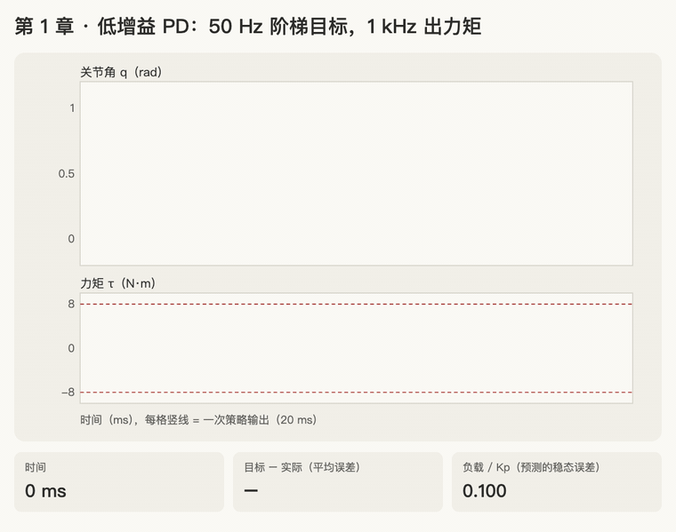

第 1 章 · 运控的三层与 PD 目标接口：策略不直接给力矩
本地运行
git clone https://github.com/wikieden/robot-motion-rl
cd robot-motion-rl/code/notebooks
pip install jupyterlab torch numpy
jupyter lab ch01_layers_pd.ipynb也可以下载后直接用 VS Code 打开 .ipynb 运行。需要 GPU 的章节在 Colab 里选「代码执行程序 → 更改运行时类型 → GPU」。
本章回答：一台人形机器人从「想做什么」到「电机出多少力」分几层？强化学习训出来的策略到底输出什么？为什么很多运控论文故意把 PD 增益调得很低？
讲解日期：2026-11-20 · 上一章：《从零学强化学习》第 23 章 PPO · 下一章：第 2 章 把动作跟踪写成 MDP
对应原文：SuperMimic 附录 A「Action」（papers/supermimic-2610.28480.txtL692–L695）；机器人架构讲义第 6 章（robot-system-architecture/notes/lessons/06-low-level-control.md）。papers/指cs285-deep-rl/materials/text/papers/。
本章缩写：PD = Proportional–Derivative（比例 / 微分：按误差和误差变化率出力）；Kp、Kd：比例增益、微分增益（p = proportional，d = derivative）；q、q̇：关节角、关节角速度（读 "q dot"，点表示对时间求导）；q*：目标角（星号 = 想要的值）；τ：力矩（读 "tau"）；Hz = Hertz（赫兹：每秒多少次）；RL = Reinforcement Learning（强化 / 学习）。全部缩写见 附录 · 缩写与术语表
讲解
第一步：三层，三种速度（2026-11-20）
类比：开车。 你决定「去超市」（高层，几秒想一次）；你的手每秒调几十次方向盘（中层）；方向助力泵每秒响应上千次，把你手上的力放大（底层）。
| 层 | 频率 | 做什么 | 谁来做 |
|---|---|---|---|
| 高层 | 1–10 Hz | 「往前走」「做个空翻」 | VLA（Vision-Language-Action，视觉 / 语言 / 动作）模型、规划器、遥控 |
| 中层 | ~50 Hz | 给每个关节一个目标角 q* | RL 训出来的策略（本书主角） |
| 底层 | ~1000 Hz | 按 q* 算力矩 τ，驱动电机 | PD 控制器（写死的公式，不学习） |
数字：策略 50 Hz、PD 1000 Hz，所以策略每给一次目标角，PD 要跑 1000 / 50 = 20 次。
一句话：策略不直接管电机，它每 20 ms 给一次「目标角」，剩下的交给 1 kHz 的 PD。
第二步：PD 公式（2026-11-20）
类比：一根弹簧加一个阻尼器。 关节被弹簧拉向目标角（离得越远拉得越狠），阻尼器让它别冲过头（转得越快越刹车）。
- \(\tau\)（tau）：电机要出的力矩，单位 N·m（牛·米）。
- \(K_p\)：比例增益，「弹簧有多硬」。\(q^* - q\)：离目标还差多少（rad，弧度）。
- \(K_d\)：微分增益，「阻尼有多大」。\(\dot q\)：关节现在转多快（rad/s）。这里目标速度取 0，所以只剩 \(-K_d\dot q\)。
例子（数字是编的）：\(K_p = 40\)，\(K_d = 2\)，\(q^* = 0.5\)，\(q = 0.3\)，\(\dot q = 1.0\)：
| 项 | 算式 | 结果 |
|---|---|---|
| 弹簧 | 40 × (0.5 − 0.3) | 8 N·m |
| 阻尼 | −2 × 1.0 | −2 N·m |
| 合计 | 8 − 2 | 6 N·m |
电机有上限。如果最大力矩 \(\tau_{max} = 5\)，6 会被截成 5（力矩饱和）。仿真和真机的饱和值必须一样，否则仿真里学会的动作真机做不出来。
一句话：PD 是「弹簧 + 阻尼」，输入目标角，输出力矩，还会被电机上限截断。
第三步：低增益时，目标角其实是「力矩旋钮」（2026-11-20）
类比：用一根软弹簧提重物。 弹簧越软，重物把它拉得越长。想让重物停在某个高度，你得把弹簧上端提得比那个高度更高。
关节上有恒定负载（比如重力）时，PD 停下来的位置不在 \(q^*\)，而是差一点：稳态时弹簧力正好顶住负载，
例子（负载 4 N·m，目标 0.5 rad，代码里用 1 kHz 积分仿真了 2 秒）：
| \(K_p\) | 稳态误差 4 / Kp | 仿真最后的 q |
|---|---|---|
| 40（低增益） | 0.10 rad | 0.400 |
| 200（高增益） | 0.02 rad | 0.480 |
低增益下，想让关节停在 0.5，设定值要给 0.5 + 0.1 = 0.6。也就是说，策略输出的「目标角」不再是「我想让关节到哪」，而是「我想让电机出多大力」的一个旋钮。
SuperMimic 原文（L694–L695）沿用 BeyondMimic 的写法：动作映射成设定值 \(q^{sp} = \alpha\,a_t + q^0\)（\(q^0\) 是默认姿态，α 是缩放），并说低 PD 增益让这个设定值成了 "a proxy for joint torque"（关节力矩的代理）。
为什么故意调低？ 低增益让关节「软」：落地冲击时不会硬顶，接触更平顺，仿真和真机的差别也小（硬弹簧对建模误差很敏感）。代价是策略要自己学会「多给一点」去抵消负载，这正好是 RL 擅长的。
一句话：低增益时目标角 ≈ 力矩旋钮，策略学的是「给多大劲」，不是「去哪」。
动画演示：低增益 PD 跟踪阶梯目标

可交互版：animations/01-pd-layers.html（滑块：Kp、Kd、负载。要能拖滑块需用本地服务打开，见 animations/README.md）。
怎么看：
- 灰色阶梯是策略每 20 ms 给一次的目标角（第一步），蓝线是关节实际角度，按 1 kHz 一小步一小步算（第二步）。
- 下方橙色是 PD 算出的力矩，碰到 ±τ_max 的虚线就被截平（第二步的饱和）。
- 打开负载：蓝线总比阶梯低一截，差距约为负载 / Kp（第三步）。把 Kp 调大，差距变小但力矩更「冲」。
练习与作答记录
题 1（第一步）：如果策略跑 100 Hz、PD 跑 2 kHz，策略每给一次目标角，PD 跑几次？如果策略算得太慢、只有 25 Hz，会发生什么？
作答：（待作答）
题 2（第二步）：\(K_p = 30\)，\(K_d = 1.5\)，\(q^* = 0.2\)，\(q = 0.4\)，\(\dot q = -2\)，力矩上限 4。算 τ，并说明有没有被截断。
作答：（待作答）
题 3（第三步）：负载 3 N·m，\(K_p = 60\)。想让关节停在 1.0 rad，设定值该给多少？为什么说这时策略输出的是「力矩旋钮」？
作答：（待作答）
口诀
高层想、中层定、底层出力：VLA 几赫兹、策略五十赫兹、PD 一千赫兹；
弹簧拉向目标、阻尼刹住速度，力矩到顶就截平；
增益调低关节软，负载压出一截差，目标角变成力矩钮。
本章复习卡片
M01（三层频率与 PD 公式）、M02（低增益下设定值是力矩代理，稳态误差 = 负载 / Kp）
附录 · 延伸阅读
留给以后深入学习用，不影响本章主线。★ 是建议先读的。
推荐阅读
| 读什么 | 读哪里 | 读它为了什么 |
|---|---|---|
| ★ 机器人架构讲义第 6 章 | robot-system-architecture/notes/lessons/06-low-level-control.md |
PD + 前馈、FOC 电流环、阻抗控制，本章底层的完整版 |
| ★ 运控细化笔记 §2 | robot-system-architecture/notes/02-motion-control-deep-dive.md §2.3「PD 目标」接口 |
为什么仿真和真机的 Kp、Kd、饱和、延迟必须一致 |
| SuperMimic 附录 A | papers/supermimic-2610.28480.txt L692–L695 |
动作 → 设定值的映射、低增益的原话 |
| BeyondMimic | papers/beyondmimic-2508.08241.txt（PD 增益与动作缩放的设定） |
人形动作跟踪的标准设定从哪来 |
| Modern Robotics 第 11 章 | robot-system-architecture/materials/text/modern-robotics-lynch-park.txt |
计算力矩、PD 稳定性的推导 |
数学原理
- 稳态：系统不再变化时 \(\dot q = 0\)、\(\ddot q = 0\)，牛顿定律变成「力平衡」：$K_p e = $ 负载。
- 数值积分（显式欧拉）：\(\dot q \leftarrow \dot q + \ddot q\,\Delta t\)，\(q \leftarrow q + \dot q\,\Delta t\)，Δt = 1 ms，就是仿真器一小步一小步往前算的方式。
公式清单
| 公式 | 意思 |
|---|---|
| \(\tau = K_p(q^*-q) - K_d\dot q\) | PD 力矩 |
| \(\tau \leftarrow \text{clip}(\tau, -\tau_{max}, \tau_{max})\) | 力矩饱和 |
| \(e_{ss} = \text{负载}/K_p\) | 恒定负载下的稳态误差 |
| \(q^{sp} = \alpha a_t + q^0\) | 策略动作 → 关节设定值 |
代码对照：把本章的数字用代码算一遍
用 Python + NumPy（Numerical Python：数值 / Python）把讲义里讲过的数算一遍，不算练习题。代码在仓库本地
robot-motion-rl/solutions/chapter-code/ch01_layers_pd.py，配套测试tests/test_ch01_06.py，notebook 在notebooks/ch01_layers_pd.ipynb。Mac 上直接能跑，不需要 GPU：
bash cd robot-motion-rl/solutions/chapter-code uv run python ch01_layers_pd.py # 一步一步打印 uv run pytest tests/test_ch01_06.py
讲义 ↔ 代码（增益、负载、角度都是编的）：
| 讲义 | 公式 | 写法 | 跑出来 |
|---|---|---|---|
| 第一步 三层 | 1000 / 50 | pd_steps_per_policy_step() |
20 |
| 第二步 PD | \(K_p(q^*-q)-K_d\dot q\) | pd_torque(40, 2, 0.5, 0.3, 1.0) |
6.0；加饱和 5.0 |
| 第三步 稳态误差 | 负载 / Kp | steady_state_error(4, kp) |
0.100、0.020 |
| 第三步 仿真 | 1 kHz 积分 2 s | simulate_joint(kp, kd, 0.5, 4) |
0.400、0.480 |
关键几行：
tau = kp * (q_target - q) - kd * qd # PD：弹簧拉向目标，阻尼刹住速度
qdd = (tau - load) / inertia # 牛顿第二定律：I·q̈ = τ − 负载
qd += qdd * dt # 显式欧拉，dt = 1 ms（1 kHz）
q += qd * dt
代码里才看得到的 2 件事：
- 仿真里 Kd 取了临界阻尼 \(2\sqrt{K_p I}\)（I = 0.1），这样 2 秒内能停稳；讲义第二步的 Kd = 2 只是算一次力矩用的例子。
- 仿真最后的角度和「目标 − 负载/Kp」差不到 0.002，测试按这个容差核对。
自己改一改（不影响练习答案）：
- 把
simulate_joint的 kd 改成临界阻尼的 0.1 倍，看最后的角度还稳不稳（打印中间过程）。 - 把 dt 改成 0.02（相当于 PD 也只跑 50 Hz），看会不会发散。